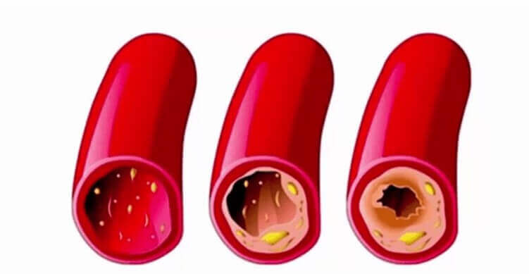

Odkrycie szwajcarskich naukowców całkowicie zmieniło
podejście do leczenia nadciśnienia tętniczego. Teraz możesz samodzielnie pozbyć się skoków ciśnienia w
zaledwie 28 dni.
Nadciśnienie tętnicze jest najniebezpieczniejszą chorobą na całym
świecie. Tylko w samej Europie ponad 5 milionów ludzi umiera co roku z tego powodu i jego konsekwencji!
Każdy może zachorować na tę patologię, 98% osób powyżej 50 roku życia ją ma – jeden ma ją wcześniej,
drugi ma ją później.
Dzisiaj szwajcarskim naukowcom udało się ustalić PRAWDZIWE PRZYCZYNY nadciśnienia i zaoferować unikalny sposób ich wyeliminowania. Najwspanialszą rzeczą w tej wiadomości jest to, że nie musisz brać kosztownych leków chemicznych, aby pozbyć się przyczyn nadciśnienia! Nadciśnienie tętnicze można wyleczyć w sposób, w jaki było ono leczone w czasach starożytnych. W dniach dzisiejszych naukowcy ponownie wprowadzili go do użytku. I to dokonało prawdziwej rewolucji w leczeniu, nie tylko konkretnie nadciśnienia, ale także innych chorób układu krążenia.
W ten sposób możesz wyleczyć choroby, takie jak:
- Miażdżyca
- Choroba niedokrwienna serca
- Zakrzepica
- Zakrzepowe zapalenie żył
- Arytmia i dusznica bolesna
- Szmery serca
- Hematopoeza (anemia)
- Żylaki
Na spotkaniu z dziennikarzami otwarcie szwajcarskich naukowców skomentował znany kardiolog, lekarz najwyższej kategorii, profesor Karol Szmaj.
Dziennikarz: Jak jest niebezpieczne wysokie ciśnienie?
Karol Szmaj: Oczywiście wysokie ciśnienie tętnicze jest bardzo niebezpieczną patologią. Serce szybko się zużywa, a naczynia robią się kruche, co zwiększa ryzyko ich pęknięcia. Pęknięcie naczynia mózgowego – udar mózgu, zawał serca. Obie choroby są śmiertelne.
Ponadto wysokie ciśnienie jest niebezpieczne, ponieważ może spowodować oderwanie się skrzepu w naczyniu i zatkanie układu krwionośnego. To również grozi śmiertelnymi powikłaniami.
Wysokie ciśnienie szybko zużywa cały organizm człowieka. Dlatego właśnie nadciśnieniu często towarzyszą takie choroby, jak:
- Ślepota
- Niewydolność serca
- Niewydolność nerek
- Miażdżyca
- Choroby stawów i kręgosłupa
- Impotencja
- Niedokrwienie mózgu
Oczywistym jest to, iż trzeba pozbyć się nadciśnienia. I to zrobić jak najszybciej.
Dziennikarz: Dlaczego leki dostępne w aptekach nie są w stanie wyleczyć nadciśnienia?
Karol Szmaj: Większość leków w aptekach ma działanie hipotensyjne, ich działanie ma na celu wyeliminowanie objawów patologii – najwyższego ciśnienia tętniczego. Mają tylko krótkotrwały efekt. Gdy tylko się skończy – ciśnienie ponownie wzrośnie. Dlatego leki przeciwnadciśnieniowe należy przyjmować przez całe życie.
Ponadto, do tych leków dość szybko rozwija się tolerancja, i trzeba ich wymienić na inne. Funkcją leków przeciwnadciśnieniowych jest ochrona człowieka przed wysokim ciśnieniem tętniczym, ale same leki nie leczą nadciśnienia. Jeśli ktoś chce całkowicie i na zawsze pozbyć się choroby, musi użyć innych środków.
Pytanie dziennikarza: w czym jest sens odkrycia szwajcarskich naukowców w leczeniu nadciśnienia?
Karol Szmaj: Naukowcy z Szwajcarskiego instytutu serca i naczyń krwionośnych odkryli, że nadciśnienie jest konsekwencją zanieczyszczenia naczyń szczególnym rodzajem cholesterolu. W pewnym stopniu on podobny jest do tłuszczu w zimnej wodzie, w trakcie życia cholesterol osiada na wewnętrznych ściankach naczyń krwionośnych coraz grubszą warstwą. W rezultacie zmniejsza się użyteczny prześwit w naczyniach krwionośnych. Aby zapewnić wystarczające ukrwienie narządów wewnętrznych, serce musi zwiększać ciśnienie krwi. W ten sposób rozwija się nadciśnienie związane z wiekiem.
Szwajcarscy naukowcy odkryli, że złogi cholesterolu mogą być niszczone przez wielonienasycone kwasy tłuszczowe – Omega-3, Omega-6, Omega-9. Zostało przeprowadzono ponad 120 eksperymentów na dużą skalę, zanim udało się ustalić stosunek optymalny tych kwasów do skutecznej walki z cholesterolem. Odkryto – ten stosunek wynosi 1:3:10. Za to odkrycie i pracę 3 pracowników Szwajcarskiego Instytutu Serca i Naczyń zostało nominowanych do Nagrody Nobla w dziedzinie medycyny.
Jest to naprawdę bardzo ważne odkrycie, ponieważ umożliwia LECZENIE nadciśnienia. Nie obniżać ciśnienie, chcę to podkreślić, a wlasnie leczyć nadciśnienie. Po miesięcznym spożyciu nienasyconych kwasów tłuszczowych Omega w stosunku 1:3:10 nadciśnienie odstąpi. Człowiek uzyska swobodę od przyjmowania leków przeciwnadciśnieniowych, poprawi swoje zdrowie i przedłuży swoje życie.
Pytanie dziennikarza: Czy może nam Pan dokładniej opowiedzieć, jakie leki należy przyjmować, aby wyleczyć nadciśnienie?
Karol Szmaj: Jak już powiedziałem, do czyszczenia naczyń krwionośnych i leczenia nadciśnienia tętniczego potrzebne są nienasycone kwasy tłuszczowe omega w stosunku 1:3:10. W takim stosunku w przyrodzie występują one tylko w jednej roślinie – w NASIONACH CANNABISU. Naukowcom udało się uzyskać wysokoskoncentrowany olejek z nasion – wymienione wyżej kwasy są w nim zawarte w odpowiednim stosunku oraz w ilości, wystarczającej do przeprowadzenia leczenia.
Naukowcy zaproponowali ochotnikom pobierać wysokoskoncentrowany olejek z cannabisu, który otrzymali. Wyniki zdziwiły wszystkich – mogę powiedzieć, że ludzkość znalazła lekarstwo na nadciśnienie!
Chcę pokazać wyniki szwajcarskich badań. Łącznie uczestniczyło w nich 2182 osoby, czyli ochotnicy. Wszyscy cierpieli na nadciśnienie i brali olejek z cannabisu przez 28 dni.
Wyniki badań
- Naczynia zostały całkowicie oczyszczone z cholesterolu oraz innych zanieczyszczeń – 96% badanych
- Poziom złego cholesterolu we krwi spadł – 98% badanych
- Ciśnienie tętnicze zostało ustabilizowane do normy – 94% badanych
- Bóle głowy zniknęły – 99% badanych
- Wzrok uległ poprawie – 74% badanych
Pytanie dziennikarza: Kiedy wysokoskoncentrowany olejek CBD w kapsułkach będzie dostępny w aptekach europejskich?
Karol Szmaj : Najprawdopodobniej nie pojawi się wkrótce w sieciach aptecznych. Rzecz w tym, że do sprzedaży przez apteki wymagane są ogromne partii preparatu, a olejek z cannabisu w tej chwili produkowany jest w ograniczonych ilościach ze względu na niedobór w Europie nasion cannabisu. Według najbardziej optymistycznych prognoz, pojawi się w aptekach dopiero w roku 2022. Ten czas potrzebny jest na zorganizowanie zakupu surowców w Azji lub sadzenia cannabisu w Europie.
Teraz (i, ja myślę, że potrwa jeszcze kilka lat) można zamówić tylko na oficjalnej stronie producenta.
Co do ceny... W tej chwili jest ona jest minimalną, ponieważ wysokoskoncentrowany lejek z cannabisu jest sprzedawany od producenta, omijając pośredników. Sam olejek można przyjmować nawet bez zalecenia lekarza.
Jedyną rzeczą wartą zapamiętania jest to, że olejek z cannabisu w kapsułkach jest sprzedawany w ograniczonych ilościach, a liczba zamówień rośnie coraz więcej z dnia na dzień, ponieważ coraz więcej mężczyzn dowiaduje się o jego cudownych właściwościach. Dlatego polecam wszystkim, aby pozostawili zgłoszenie na otrzymanie olejku tak wcześnie, jak to możliwe, dopóki jest on dostępny w sprzedaży.
Zalecany przez Światową Organizację Zdrowia

Komentarze
Albina Kukulska
Dziękuję. Zamówiłam olejek z cannabisu. Będę leczyć się. Mam często wysokie ciśnienie.
Maciej Głowacki
Również zamówiłam.
Mieczysław Kowal
I jestem jednym z tych, którym udało się już spróbować tego olejku. Było nadciśnienie. Było i już nie ma! Teraz czuję się całkowicie zdrowym. Ciśnienie wcale nie podnosi się.
Józef Parkan
Dziękuję za “”!! Ciśnienie – jak huśtawka, myślałem, że umrę. Zwykle pigułki niewiele pomogły. Potem zobaczyłem ten artykuł i zamówiłem olejek. Pobieram tylko tydzień, a ciśnienie już wróciło do normy.
Michał Gawron
Przekroczyłem 50-kę. Wypróbowałem w ubiegłym roku. Uratowało ono i mnie również. Ciśnienie przestało rosnąć, ale teraz ciągle uprawiam lekki sport, i staram się jeść bardziej poprawnie! Wszystkim, którzy nie próbowali, polecam ten olej.
Stanisław Rak
Szczegóły, dotyczące przeczytałem na oficjalnej stronie internetowej. Fenomenalnie!
Elżbieta Charzewska
Wszystkim cześć. Teraz odwiedziłem witrynę tego Instytutu Kardiologii, naprawdę pozostało niewiele opakowań! Najwyraźniej mamy wiele nadciśnieniowców!
Jarosław Słoik
Nadciśnienie tętnicze jest naprawdę okropną chorobą. Najbardziej niepokoiły mnie ciągłe szumy w uszach. To był horror. Łeb mnie ciągle bolał, czasem nadciśnienie po prostu „ogłuszało”. Koledzy patrzyli się ze zdziwieniem. I ciągła senność – to męka. Kapsułki z cannabisu uratowały mnie.
Stefan Górniak
Olejek z cannabisu jest doskonałym lekarstwem na nadciśnienie. Leczyłem się z jego pomocą. Ciśnienie przestało rosnąć w ciągu 5 dni po rozpoczęciu przyjmowania. Przestałem pić tabletki. Czuję się świetnie.
Zofia Rogowska
W gazecie przeczytałam o olejku z cannabisu i jego stosowaniu w leczeniu nadciśnienia. Pisano również, że przełom w leczeniu. Muszę spróbować zamówić.
Sebastian Król
I otrzymałem go wczoraj od kuriera. Udało mi się zamówić na czas.
Grzegorz Lewak
Pół życia miałem nadciśnienie. Za radą przyjaciela, który jest lekarzem zaczął brać wysoceskoncentrowany lejek z cannabisu. W wyniku od kilku miesięcy ciśnienie mieściła się w granicach 110/70, 120/80. Dlaczego nigdy wcześniej nie stosowano tej rośliny do leczenia chorób układu krążenia. Tyle ludzi już umarło.
Krzysiek Kowalczyk
Dziękuję. Ciekawie. Zostawiłam zgłoszenie. Naprawdę mam nadzieję, że preparat jest jeszcze do sprzedaży. Bez niego nie wiem, co leczyć.
Artur Snopek
Dziękuję!!!